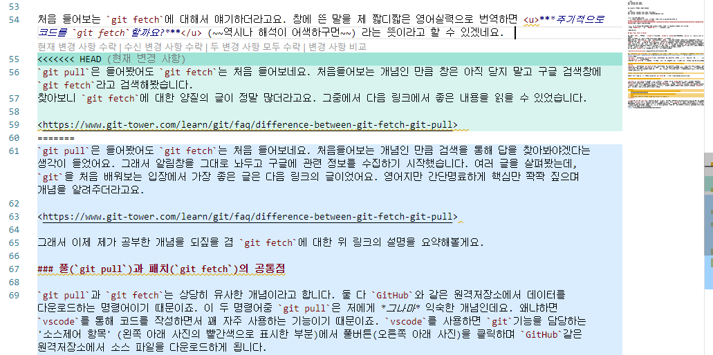

이 HTML 문서는 HTML에서 링크로 페이지를 연결하는 내용을 공부하려고 작성한 문서입니다. 모든 내용을 https://www.w3schools.com/html/html_links.asp에서 배웠습니다. 오늘 스승의 날(5월 15일)인데 감사합니다, w3 선생님~
책갈피 링크 만들기 소제목으로 이동
테스트용 iframe으로 이동
a 태그의, href 속성. href = "링크 주소"를 입력할 수 있다. a 태그로 둘러싸인 부분에 글자를 적으면 해당 글자가 시퍼렇게 멍이 들면서 하이퍼링크가 생성된다. 하이퍼링크를 클릭하면 href에 적은 주소로 이동한다.
href 속성에 http 주소 뿐만 아니라 컴퓨터 폴더에 있는 다른 html 문서를 입력할 수 있다.
이렇게
사진을 링크로 적으면 어떻게 될려나
이렇게?
오! 사진으로 잘 연결되었다. 이거는 어떻게 되려나? 아 md 파일은 그냥 아무 꾸밈없이 나타나는 구나
마지막으로 mp3파일은 동영상을 띄우려고 했는데, mp3 다운로더로 받아서
mp3 파일이 되었구나 ;; 그렇구나 ㅋㅋㅋ 이런. 크롬 브라우저에서 실행이 된다. 동영상은 해보지 않았지만 크롬 브라우저에서 동영상 재생이 될 것이라 생각한다.
HTML 링크에 target 속성을 추가하면 브라우저 창에 띄우는 방식을 설정할 수 있다. w3school에서는 총 5가지의 방식을 알려준다.

a태그 사이에 img 태그를 삽입하면 이미지 링크가 생성된다. 이미지를 클릭하면 링크로 이동한다.
HTML에서 버튼으로 링크를 만들 수 있습니다. 자바스크립트를 사용해서 버튼을 생성하는 건데요. 자세한 내용은 JavaScript를 공부하면서 배우게 될 거예요. 버튼을 클릭하면 링크로 이동합니다.
링크의 제목은 링크에 커서를 올려놀때 뜨는 작은 도움말을 정의합니다. 커서를 올려보세요.
HTML 링크는 사용자가 방문하지 않은 링크, 방문한 링크, 활성화된 링크(마우스 우클릭시 나타나는 링크), 커서를 살포시 올려놓을 때 나타나는 링크의 색을 다르게 표현합니다.
CSS 설정을 통해 링크의 색을 설정할 수 있습니다.
따로 설정하지 하지 않을 경우 링크의 색상은 아래와 같이 표시됩니다.
HTML 책갈피(북마크)는 한 웹페이지 안에서 특정 부분으로 이동시키는 역할을 해요. 책갈피는 웹페이지가 아주 길 때 유용하답니다.
책갈피를 만들려면 먼저 책갈피를 생성하고 책갈피로 이동하는 링크를 만들면 돼요.
그러기 위해서는 id 속성을 사용해야 합니다.
<h2 id="C4">Chapter 4 </h2>처럼 사용합니다. 링크로 연결시키고 싶은 태그에 id 속성을 붙여주면 됩니다.
그리고 <a href="#C4">Jump to Chapter 4<a>와 같이 링크 태그를 제작합시다.
id 명칭 앞에 #를 붙여야 하더라고요.
다른 페이지의 북마크로 이동하는 링크를 생성할 수도 있습니다. (href = "웹주소#책갈피id")식으로 적어줍시다.
CSS.html의 CSS란? 소제목으로 이동
상단의 링크는 href="CSS.html#CSS란?" 으로 만들었어요.
{kind=link}